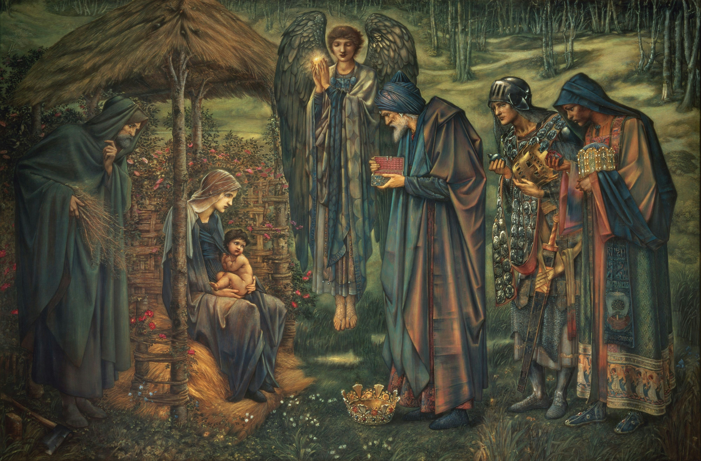
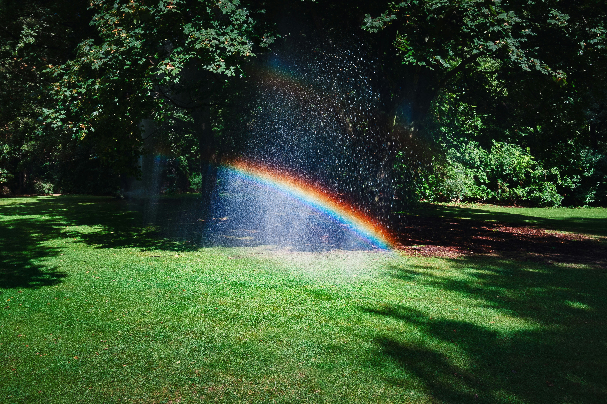
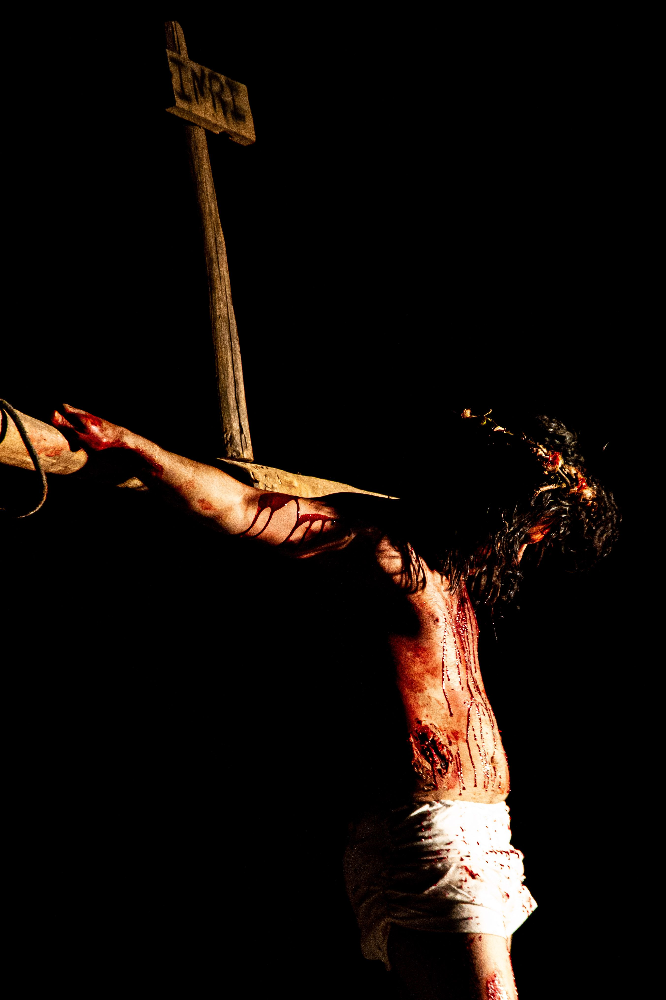
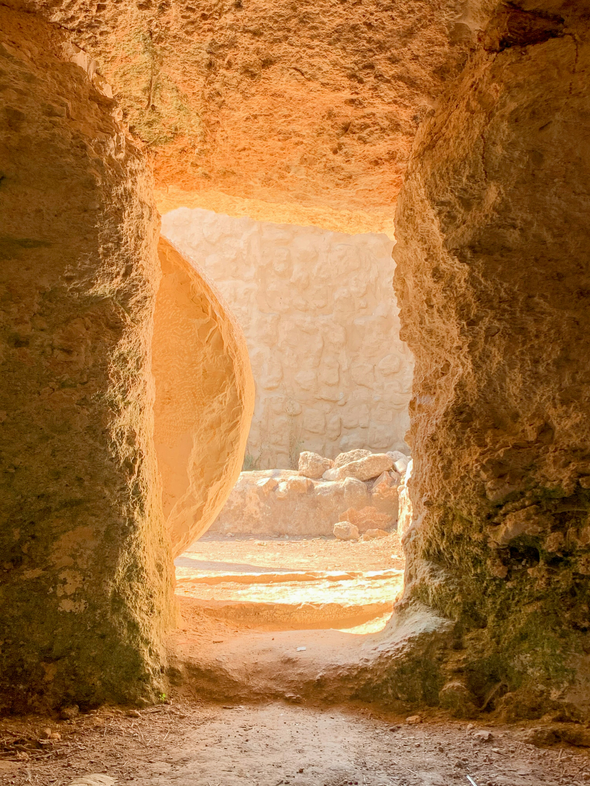
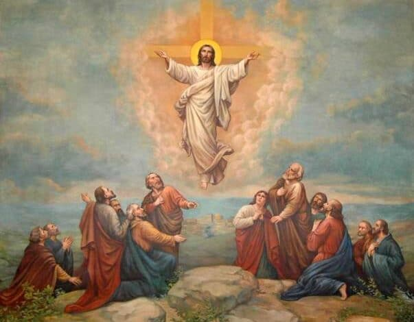

UMA JORNADA ATRAVÉS DO TEMPO
Do nascimento em Belém à ascensão aos céus — sete momentos que transformaram a história da humanidade.
"E ela deu à luz o seu filho primogênito..." — Lucas 2:7
Jesus nasceu em Belém, na manjedoura de uma estalagem, anunciado por anjos aos pastores e guiado por uma estrela que conduziu os magos do Oriente.

"Este é o meu Filho amado, em quem me comprazo." — Mateus 3:17
João Batista mergulha Jesus nas águas do Jordão. Os céus se abrem, o Espírito Santo desce como pomba e a voz do Pai se faz ouvir.
"Os cegos veem, os coxos andam, os leprosos são purificados..." — Mateus 11:5
Água se transforma em vinho, cinco pães alimentam milhares, tempestades se acalmam e mortos ressuscitam, demonstrando autoridade divina.

"Bem-aventurados os limpos de coração, porque eles verão a Deus..." — Mateus 5:8
No topo de uma colina, Jesus ensina sobre o amor, o perdão e as Bem-Aventuranças, estabelecendo os pilares éticos e espirituais do Reino.
"Pai, perdoa-lhes, porque não sabem o que fazem." — Lucas 23:34
Jesus é condenado e pregado na cruz. Entre o sofrimento e a escuridão que cobre a terra, Ele entrega o Seu espírito para a redenção da humanidade.

"Por que buscais entre os mortos aquele que vive?" — Lucas 24:5
Ao terceiro dia, o túmulo é encontrado vazio. Jesus ressurge vitorioso sobre a morte, aparecendo aos Seus discípulos e transformando o medo em esperança.

"E foi elevado ao céu, à vista deles, e uma nuvem o encobriu..." — Atos 1:9
Quarenta dias após ressuscitar, diante dos Seus seguidores, Jesus abençoa a todos e eleva-se aos céus, prometendo voltar e enviar o Consolador.

"Eu sou o caminho, a verdade e a vida."
Batista Missionária